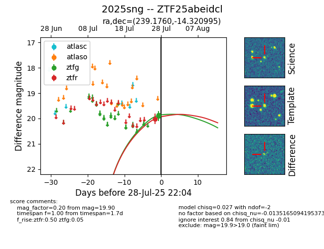

Target 2025sng at 2025-07-28 22:04, see:
FINK: fink-portal.org/2025sng
Lasair: lasair-ztf.lsst.ac.uk/objects/2025sng
ALeRCE: alerce.online/object/2025sng
TNS: wis-tns.org/object/2025sng
YSE: ziggy.ucolick.org/yse/transient_detail/2025sng
alt names
ZTF25abeidcl (ztf,fink)
2025sng (tns,yse)
coordinates:
equatorial (ra, dec) = (239.1760,-14.32100)
galactic (l, b) = (356.0740,+28.86847)
photometry
last ztfg=19.90, ztfr=20.02
2 ztfg, 1 ztfr detections
